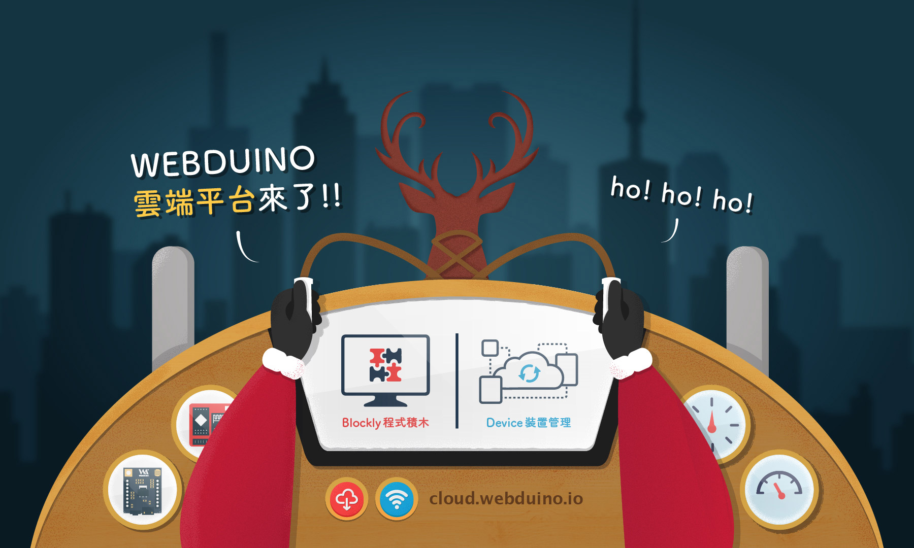
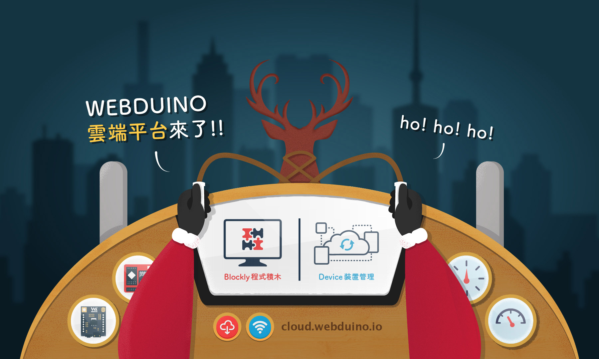

絕無僅有的創客體驗
使用 Webduino 將可以讓不具有韌體程式專業背景的設計師、網頁開發者，也可以輕鬆成為創客 ( Maker、自造者 )，享受創造的樂趣和快感。
只做網頁就可快速上手
純粹利用 HTML、Javascript ...等網頁語法進行開發，不需要學習艱難的 C 或 C++，只要會寫網頁，就可以串起 Arduino，控制形形色色的傳感器。
支援電腦、平板、手機
由於使用網頁語法開發，可以藉由網頁控制元件或傳感器，因此不論是 Windows、Mac、Android 或 iOS 都可以順利運行，輕鬆實現跨平台的控制。
最簡單的開發模式
Webduino 的誕生，替物聯網開啟了最關鍵的一條路，讓網頁開發者可以更容易地跨入硬體的領域，讓硬體的開發者可以更簡單的使用網頁的服務。
豐富完整的線上資源
上百篇的教學文章、範例、展示影片，由淺入深的引入物聯網的核心開發領域，讓您在學習的過程享有最完整的教學資源。
人數破千的技術社團
Webduino 平均每個月舉辦 2.8 場活動，在 Facebook 更擁有上千人的技術討論社團，有任何問題都可在社團裡找到專人解答。 
 
